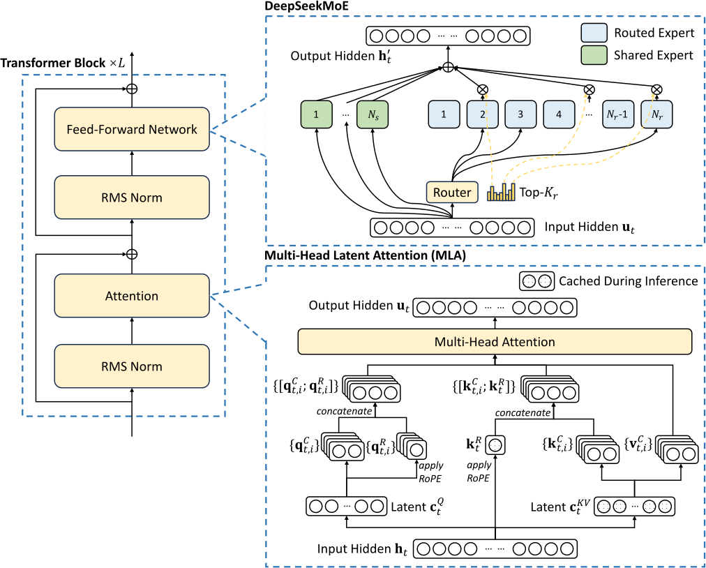

Put on my best dress with Demeter petrichor, blue spruce, and thunderstorm. To San Francisco.
(Gwern later stated that he was using Acqua di Sale Eau de Parfum by Profumum)
Gwern appeared. He was a human. I was a bit expecting something like:
𝕲 𝕲 𝕲
𝕲𝕲𝕲𝕲𝕲
𝕲
𝕲
𝕲
𝕲𝕲𝕲𝕲𝕲
𝕲 𝕲
𝕲 𝕲
𝕲 𝕲
𝕲 𝕲
𝕲 𝕲
or maybe (best viewed in dark mode):
“… This administration probably doesn’t even know what weights are.”
“–But it does know a lot about BIASES!”
Room laughed.
“My professor of numerical linear algebra said they had to rewrite some grant proposals to remove mentions of ‘bias/variance tradeoff’ because it’s an instant kill now.”
“Next week I’m flying to a conference to speak about AI and I was like ‘But I’m not an expert, why not invite this or that person?’. They said that they wanted speakers on AI scaling, and they already got someone, Alex Honnold, and he was the guy who was scaling El Capitan rock face–” – room erupts into laughter – “So I suddenly feel a lot better about my expertise!”
“Well you know, AI scaling startup companies is a lot like scaling the El Capitan right? One misstep and you miss funding and fall to your capitalistic death.”
“Riiiiight.”
“You know, that guy’s girlfriend is like ‘Can you stop risking your life all the time? I’m trying to start a family with you.’ and that guy’s like ‘Nope. I must scale. Nothing else matters.’.”
“Mmm it sounds pretty sad.”
“But I think it’s reasonable. If you can do one thing extremely well, you must do the thing. Nothing else matters. Things like marriage must not stop you. It’s like your [points at Gwern] review of that movie, Jiro dreams of sushi.” Or maybe about Sake?
“Working on LLM applications has lengthened my [AGI] timeline.”
Room laughed.
“I realized that even for simple things, it’s hard to do reliably. I wanted for example simply cleaning up transcriptions, or writing tweet threads, but it’s really hard to get them do it just right the way I want. It works pretty well in the chat interface, but somehow it is much harder through the API. I tried stuffing more stuff into the system prompt, but… the lack of continual learning really bites in this case.”
“Oh yeah. Why do you think they are not doing continual learning, these big companies? Is it because…”
“Well I don’t know, but I have written a draft essay, about the economics of continual learning if it is practiced right now. I wanted to answer the question of… Let’s say, if OpenAI announces today, that ChatGPT can continually learn about you. How much money do you have to pay for it? So I calculated and the answer came out to be … [vigorous handwaving] between 20 and 100 extra USD/month, which is surprisingly … affordable?”
“Well even naively, the forward pass costs 2 FLOP per token-parameter, and the backward pass costs 4 FLOP, so multiply 20 USD/month by 3…”
“And you would want to only finetune the parameters in the later half of the layers, so you don’t need 4 FLOPs, just 2 FLOPs, so multiply by 2…”
“Actually, there is a way to do it even ‘for free’, as in there is no extra cost compared to a standard forward pass. Basically you randomly permute one matrix sometimes, and the user votes. If the random permutation gets higher votes, then put the random permutation in place. It’s like A/B testing.”
“But how… how would that be better than LoRA backprop? Sounds like the sample complexity would be really high…”
“Sounds like evolutionary algorithm, really. Those are very sample-heavy.”
The proposer then described something about how this could be done more efficiently, but I didn’t understand it. Now I think about it, it, it is more sample-heavy than RL. Consider the toy example: You have \(\theta\) the neural network parameters, and \(L(\theta)\) the loss function. You want to optimize \(L(\theta)\) by randomly jumping \(\theta\) by some \(\delta \theta\). Then, since \(L(\theta + \delta \theta) - L(\theta) \approx \braket{\nabla_\theta L , \delta \theta}\), the probability that this improves \(L\) is \(\sim 1/2\), assuming that \(\delta\theta\) is small. However, how big is this improvement? Counterintuitively, the probability that a random sample on a \(d\)-dimensional sphere is concentrated in a band of \(\pm O(1/\sqrt d)\) around its equator. Therefore, the expected improvement of taking this \(\delta \theta\) step is just \(O(1/\sqrt d)\).
Is this worthwhile? A single “jitter” comparison requires 2 forward passes, costing 4 FLOP, while a single backprop costs 6 FLOP. This means that if you just want to improve the model, backprop is much more efficient, since \(4\sqrt d \gg 6\). Although, as the speaker suggested, this could be mildly useful in the particular case where you are a big LLM provider who needs to serve many customers really fast, but the customers are also willing to make a lot of votes, and don’t mind slight service degradation on half of the replies. I would say this is a very niche situation, but yeah, in that very niche situation, jittering would be better than backprop.
“Well, I just published an essay about hacking pinball machines, and of course, it is still about AI. Reward hacking. You could hack the leaderboard, or pay someone to say that they totally saw you get a high score. Etc.”
“I mean, the speedrunning community has such high epistemic standards. So there was this speedrun, and someone actually exhaustively enumerated every single possible button press to formally prove that the speedrun record was impossible.”1
1 Not sure what that refers to, but similar examples include:
- Eric “Omnigamer” Koziel theoretically proving that 5.57 seconds in Dragster (Atari 2600) was the fastest possible, and so Todd Rogers’ record of 5.51 seconds was fake.
- Some ways to beat some levels in Arkanoid had been proven optimal by Chef_Stef who built an exact simulator in C++ to bruteforce it as fast as possible.
- A controversy over whether Billy Mitchell’s record in Donkey Kong was done on an emulator, rather than a physical console. The evidence hinged on one particular frame in the video recording, which seems to show a transition frame that is impossible on a physical console, but expected on an emulator.
2 Not confirmed. Although there was at least one reported bug that depends on the temperature of the machine: Dragon Quest III on the Japanese Famicon.
“So there was also the thing that those old NES machines, their CPU clocks get faster over the years. So now they have to put the NES in the fridge for a while to restore them to their previous clockrate! And the machine is only good for a few hours of speedrun afterwards.”2
“[Looks at Gwern] So what would your next essay be about?”
“The next essay should be about AI timelines. I just want to find out, basically, why now? Why not decades ago? There was Moravec’s scaling curve, but it was totally unconvincing. What could have been done so that decades ago, we would have an idea that, now is the time? Why did deep learning take everyone by surprise? Except a few [Moravec, Kurzweil] who didn’t have good arguments? What better arguments could have been made?”
“I think the best arguments that could have been made was to have scaling curves. They could scale from like 1 million FLOPs to 1 billion FLOPs, and extrapolate from there. It could have been more convincing. There were some scaling curves all the way back to the 1990s, like if you really try to look, but if it is invested with the power of a national laboratory it might be done even earlier.”
“So I have been reading old papers from the 1990s, and there was one paper called ‘Neural Networks and the Bias/Variance Dilemma’ from 1992 (Geman, Bienenstock, and Doursat 1992). They trained a neural network and showed that it has that bias-variance tradeoff [handwaves a V-shaped curve in air] so they argued that scaling wouldn’t work. Then I looked at what neural network they trained. They trained a network with 3 layers, and the hidden layer contained… [pause for dramatic effect] 4 neurons. FOUR! Certainly, there was a severe failure of imagination there. I mean, the paper wasn’t obscure! It was cited over 5000 times, and I think this contributed to the second neural network winter, a history of which I still want to write… before the singularity comes. Better hurry.”

“Was it because of not enough data?”
“There was this Highleyman’s data. Highleyman was really great. He was in 1960 doing many of the basic things we do now: big dataset; the train-test split; sharing data; k nearest neighbors. You can read more on it. Ben Recht wrote a long blog post about it. Ben R-E-C-H-T.”
“The blog post is titled ‘The Saga of Highleyman’s Data’.”
“And I have kept a directory of those papers on my website.”
“Well I had been looking at old papers in the 1960s. It was the Cold War, and there was not only the Soviet Union, but also China, so there was a lot of funding into machine reading and translation of Chinese documents… So I saw a few datasets where they just scanned thousands of printed Chinese characters, so they certainly could have scaled to, perhaps 100,000 data points, if they had the will to do so. (Casey and Nagy 1966) MNIST had just 60,000 characters. They could have MNIST in the 1960s. They just didn’t think of it.”
“I mean, why can’t deep learning be more like physics? Physicists got their billion-dollar colliders funded purely on theoretical extrapolations. And there was this ‘island of stability’, which is the idea that, eventually, the superheavy elements would suddenly become stable again. And nobody call that crazy, even though we still don’t see it yet.”
“Actually the island of stability theory is not convincing to most of the physics community.”
“What? But I believed that!”
“Like it is only a few groups that believe in it.”
“Maybe it’s those Russians. They seem to love getting those nanosecond new elements that are totally useless, purely to say that they did it first.”
“I feel like we really need LLM psychologists. Like I noticed that Claude Opus 4 is really… woo.”
“–And that’s why I hate Claude so much!”
Room laughed.
“So right now I’m 20% through reading Anna Karenina, and I don’t get why Anna is suddenly infatuated after one dance and one weekend…”
“Well, sometimes love or lust is like that. It’s certainly not what the author intends to be an ideal of love. There is another couple (Levin and Kitty) that is an ideal. One of them (Levin) is the author’s self-insert. But actually you should not focus too much on the romance because there are so many subplots that are interesting…”
“You can read Madame Bovary. It’s a French novel. The romance plot is basically the same as Anna Karenina. And better, there are no subplots because it’s French.”
“It’s like the distilled version of Anna. Just the romance.”
“What if it is a framing device?”
“Hmh?”
“Like, maybe Tolstoy really didn’t care for romance, but really about everything else. History, society, philosophy, religion. But he knew he had to put one romance subplot about the main character, else the reviewers would go like ‘Ugh, no romance? 0/10.’. So the author puts in it to satiate the reviewers. Like, I often find myself opening a novel and felt like, ‘Ugh, another romance plot?’ and throws it [right hand flung backward over the shoulder] into the trash! So I would say that the compulsion to put useless romance plots into novels is a long tradition.”
“Actually…” What followed was a very long interpretation of Anna Karenina, which I completely forgot about.
“You know, the interpretation of Anna Karenina is a neglected field among technologists. This could be your niche. You know, ‘3 years left to build generational wealth’?”
“I’ve been trying to calculate the energetic efficiency of AI vs humans. Humans run on 20 W but H200 runs on like 400 W. And they still don’t do nearly as well as humans in like playing games and long-horizon tasks…”
“I think the watt-for-intelligence idea is kind of flawed because there is also the question of intelligence ceiling, right? I would be totally okay to have another Einstein, even if that Einstein needs a nuclear reactor to power.”
“So the reason I’m calculating it is because if energy efficiency of AI becomes much higher than humans, then the economy will move towards that. Like, nice farmland you’ve got there, it could be better used by covering it with solar panels.”
“I guess that’s one possible way for humans to survive after AGI. To have such good property laws that we live on retirement benefits forever.”
“That’s Robin Hanson’s hope. His entire hope is stacked on top of that.”
“Only on the very medium-term. For a few years, before the em economy shifts again.”
“In the UK there was the ‘Triple Lock’3 and it is bankrupting the country. And the retirees have such an iron grip on the politics that it just couldn’t be removed. So the latest attempt is something like, ‘maybe… 2.1-ple Lock?’.”
3 Under the triple lock system, the state pension increases each April by the maximum of:
- CPI inflation in the September of the previous year.
- The average increase in total wages across the UK for May to June of the previous year.
- 2.5%.
The system was put in place sometime in 2010 as part of the coalition agreement in the UK, as a compromise between the conservative and liberal democrat parties.
“Do we want to be like the retirees? Like why should I pay more to some rich retiree in America when the money is better spent in Africa?”
“[in a moralistic narrator voice] ‘Donate now so that an AI in Africa can be run again.’.”
“‘Turn off your lamp now so that a poor AI can stay conscious for one more second.’.”
“They should go to Australia. The solar is much better. There’s that giant empty quarter of desert.”
“Everyone will go to Australia someday. That’s the plot of (the 3th book of) the Three Body Problem.”
“What is ‘at-will employment’?”
“It means you can fire employees whenever you want without giving advance notice, or reasonable cause. And employees can quit in the same way.”
“I thought it means ‘You can do whatever you want.’.”
“Yeah sure, but ‘There will be consequences.’.”
“It’s strange that America is unique in this. Even very capitalistic countries like Singapore has a 2-week advance notice. And France… you need to have a valid reason to fire people. And you need a valid reason to quit your job.”
“In Japan it’s not symmetric. Firing people is very hard, but quitting a job is not.”
“It’s called employee protection.”
“Well I haven’t left the Bay Area for 4 years, because the China–US relationship has been going worse every year. So I worry about visa.”
“But you could still visit the rest of America?”
“Well, I could, but … nothing interesting happens [gestures in a great circle] out there?”
“Oh that’s not true. I was in New York in September and it was the most beautiful place to visit.”
“So the fridge at [big company] had those yogurts that contains 200 mg of caffeine in it. One day someone came and was like ‘I haven’t eaten lunch so I’ll eat 2 of these yogurts’.”
“Oh no–” “RIP–”
“There was a woman who could not feel fear, but she felt it when she inhaled pure carbon dioxide. The reason is that there are sensitive chemoreceptors in the brainstem that could detect slight rises in carbon dioxide levels, and those weren’t damaged in her. At a conference/party there was a stand where they had balloons filled with carbon dioxide. Rarely could people inhale the whole balloon. I tried and it was hard, but I did it. It makes the throat feel like burning, maybe because of the carbon dioxide reacting with water to form carbonic acid. It created a sharp sense of fear and panic.”
Note: This probably referred to (Feinstein et al. 2013), reporting that inhalation of 35% CO₂ evoked immediate fear and panic attacks in 3 patients with amygdala lesions (due to Urbach–Wiethe disease), patients who otherwise failed to show any fear response. Patients returned to baseline after about 20 seconds.
Patel looked up the listener statistics for his podcasts on the phone. Turned out that some episodes have ~2% female viewers.
“Weird, that’s lower than the Lizardman’s constant…? Are you sure the data source is right?”
“Huh, even the Sarah Paine episodes have so few female viewers.”
“I mean, military history is very male-coded.”
“Well you can just interview an MMA wrestler.”
“Actually the price of a solar panel is dropping like crazy. People like to tell me that ‘You can’t be serious. Just because it has decreased exponentially for the past 30 years doesn’t mean it will continue for 2 more years–’” Room laughed. “–Well when I put it like that… But yeah. I really would like to know just how many little innovations has gone into each cost reduction…”
“Probably most of it is stuck inside the brains of some Chinese engineers.”

“What is the cheapest you can get those things? [points at a glass door] This perfect piece of glass shouldn’t be that much more expensive than solar chips…”
“Well, I don’t know about the solar panels, but I do know that those silicon wafers for chips [gestures a big circle in front of the chest] costs 100 USD before they enter the factory, and after they are etched full of chips, worth 100,000 USD, so that’s an upper bound.”
“… so you could imagine that, since a solar panel is silicon, and a GPU is also silicon, you can produce both together, with a big solar panel and, in the middle of it, is a GPU. Then you could load a human brain emulation on the GPU and send it into orbit, and –”
“Heat dissipation is really hard in space.”
“And they will die probably in a few years.”
“But for those few years they would experience centuries or more of subjective time. Human brains are just so slow compared to the GPUs.”
“I would disagree with that. I mean, what is a reasonable comparison standard between LLMs and humans? Sure, a very dumb LLM can totally be faster than you at babbling nonsense. We have to compare things that are actually performing the same tasks.”
“Legend says that when Watt had to figure out how to sell his engines, he had to sell it to people who only knew of horses, so he had to find what a Horsepower is, and one customer picked the strongest horse he had. So what if we measure LLMs according to units of Gwernpower–”
“Even though they don’t yet do quality writing at human levels, at least LLMs can already read at superhuman levels.”
“It’s interesting that the biggest models like Claude or Gemini can only output like 10 token/sec. Like that is actually close to human levels.”
“The fastest possible is Cerebras, but that’s so specialized–”
“They have monstrous amounts of SRAM and memory bandwidth.”
“Well, at the limit, you could imagine etching the logic directly into the hardware so it can only do one thing but as fast as possible. That’s in fact the whole selling point of Etched the company. They basically compile your neural network into an ASIC. That’s actually why I’m so interested in differentiable logic gates.”
A brief confusion ensued about whether the intended use of Etched is large-batch or small-batch inference.
“I think it’s small-batch inference, because you know, you can only saturate the FLOPs of a GPU if every floating point number that goes in is used for ~200 operations. The intended arithmetic intensity is like that.”
“This is because the FLOP count of a GPU is like 1000 TFLOP/sec, but the memory bandwidth is like 5 TB/sec.”
“And so if you have that problem of bandwidth then you really don’t want to use a small batch. Every time your parameters go into the GPU you should use it a lot, thus big batches. With Etched there is no parameter movement so you can afford something like 2 operations per floating point number.”
“Huh, so I was confused about it then? But I did remember them marketing it as ‘thousands of customer queries going in in parallel’…”
“Yeah I remember that from their talks too.”
“So this morning I got a good Socratic prompt and I got them to first understand a topic deeply, then teach me by Socratic questioning technique. And it worked! I was talking with it about an algorithm I thought I knew but a few questions in I realized I got a basic misunderstanding.”
“Oh yeah? What did they teach you?”
“Well so it was about multi-latent attention, and–”
“Mmh right that definitely can be a bit easy to misunderstand, especially if you don’t already have some understanding of the variants of attention mechanisms… Your preconceptions of what attention is, if you think it is all just multiheaded attention, could make you misunderstand.”
“So Claude told me that in MLA, instead of one vector per key and value, there is just one big vector for the entire context…”
“Wait no.” “No that’s not it.” “No uh.” Disappointed headshaking. The room fell dirgeful.
“What! Claude lied to me. I was like ‘Wait, so that means MLA is not quadratic?’ and Claude was like ‘Yeah totally that’s how you get subquadratic attention, and that’s what MLA is for.’ So it’s not really subquadratic?”
“No, MLA still gives you one vector per KV-token. The main surprise is not the fact that it uses one vector for the entire KV context – it’s not. The main difficulty is just that the position embedding is inserted somewhere … [vigorous handwaving] … in the middle of it. I still don’t understand it.”

.svg){kind=link}
“Yeah the position embedding is the weirdest part of it, for sure.”
“The main selling point of this is that it saves a lot of memory. For example, the DeepSeek-R1 has… [hand held high, indicating retrieval augmentation in progress] just 70 KB per key-value token. In contrast, GPT-3 [retrieving…] has 5 MB per key-value token. So you could just stuff like, 1 million tokens of context into 70 GB. That’s the main selling point of MLA.”
“The Socratic method in ruins. LLMs will only get more convincing from now on.”
Metadata
Comment threads